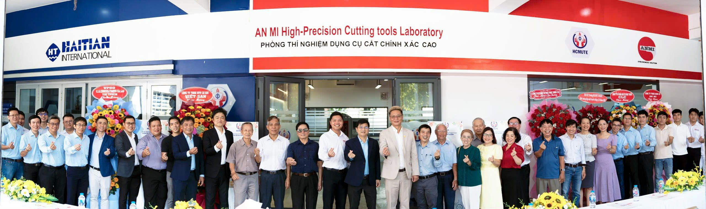
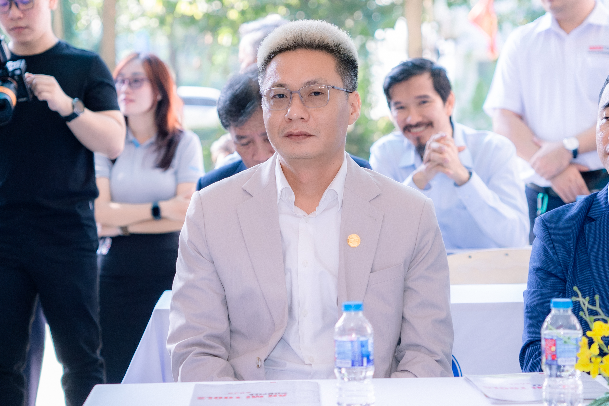
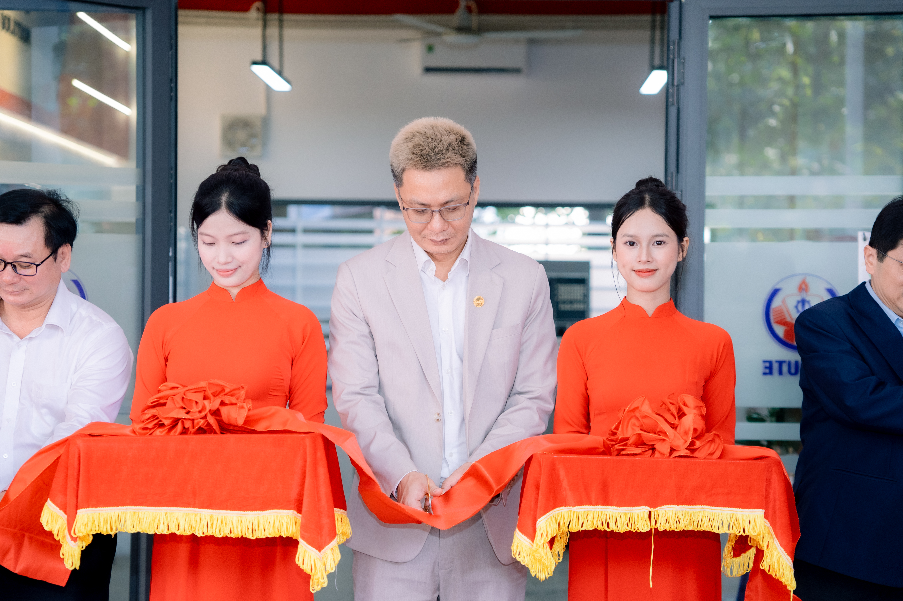
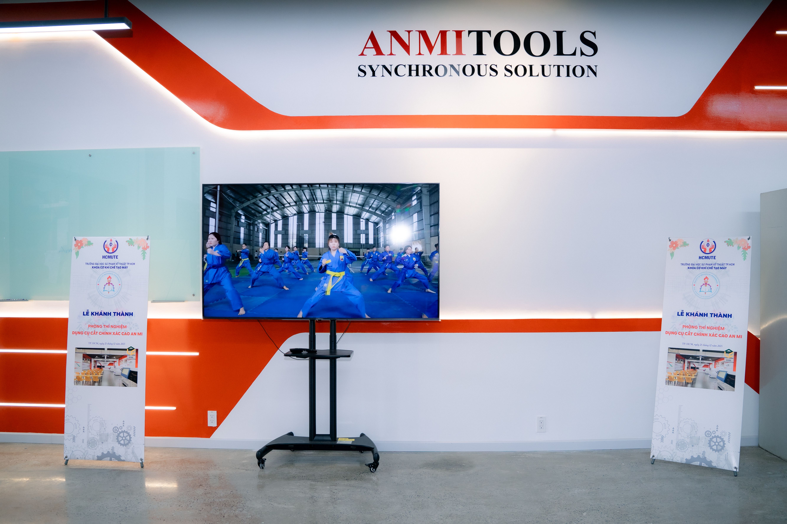
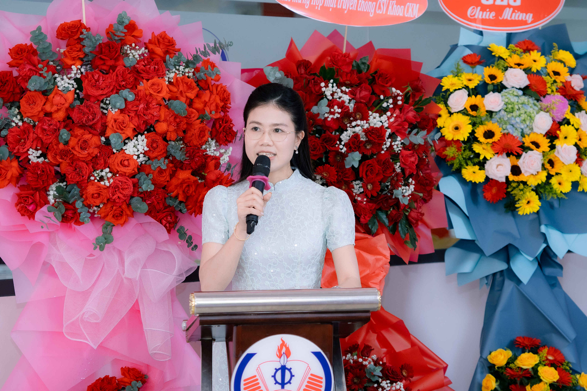
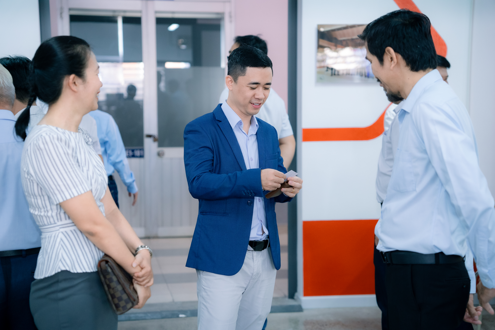

Từ một doanh nghiệp nội địa đầy khát vọng, An Mi Tools đã khẳng định vị thế khi bắt tay cùng Trường Đại học Sư phạm Kỹ thuật TP.HCM (HCMUTE) khánh thành Phòng thí nghiệm Dụng cụ cắt chính xác cao (21/12/2025). Sự kiện là cột mốc quan trọng nhằm giảm phụ thuộc vào công nghệ nước ngoài và nâng tầm nguồn nhân lực kỹ thuật Việt Nam.

Với những độc giả lần đầu biết đến thương hiệu, An Mi Tools (Công ty TNHH Dụng cụ An Mi) là doanh nghiệp hoạt động trong lĩnh vực dụng cụ cắt gọt cơ khí chính xác tại Việt Nam. Thành lập từ năm 2009 và phát triển qua nhiều giai đoạn, An Mi hướng tới năng lực sản xuất và làm chủ công nghệ, từng bước đáp ứng các tiêu chuẩn kỹ thuật ngày càng cao của thị trường.

Sự kiện khánh thành vào lúc 07:30 ngày 21/12/2025 không chỉ là hoạt động trao tặng thiết bị. Đây là bước hiện thực hóa mô hình Factory-in-School, giúp sinh viên tiếp cận thiết bị và tư duy sản xuất theo tiêu chuẩn công nghiệp ngay trong môi trường đào tạo.
Buổi lễ diễn ra với sự tham dự của đại diện nhà trường và doanh nghiệp. Đây là minh chứng cho hợp tác nhiều bên, thúc đẩy chuyển giao tri thức và nâng cao năng lực thực hành.


Phòng thí nghiệm hướng tới việc hỗ trợ đào tạo đội ngũ kỹ sư có khả năng tiếp cận sâu về dụng cụ cắt: từ lựa chọn – vận hành – kiểm tra chất lượng đến tư duy thiết kế và chế tạo. Đây là nền tảng quan trọng để mở rộng năng lực công nghiệp hỗ trợ và nâng cao sức cạnh tranh của ngành cơ khí chính xác.

Dự án còn thể hiện tinh thần gắn kết của cộng đồng kỹ thuật: cựu sinh viên đồng hành cùng nhà trường và thế hệ sinh viên mới. Văn hóa Pay it forward (đền đáp – tiếp nối) tạo nên hệ sinh thái bền vững giữa giáo dục và doanh nghiệp.

An Mi Tools cho thấy một hướng đi rõ ràng: muốn tiến tới tự chủ công nghệ và nâng cao năng lực sản xuất, phải bắt đầu từ đào tạo con người và hệ thống thực hành chuẩn công nghiệp. Phòng thí nghiệm tại HCMUTE là bước khởi đầu quan trọng để kết nối tri thức – thiết bị – thực tiễn, góp phần thúc đẩy ngành cơ khí chính xác Việt Nam phát triển bền vững.
{kind=link}
{kind=link}
{kind=link}
{kind=link}
{kind=link}
{kind=link}